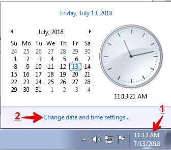
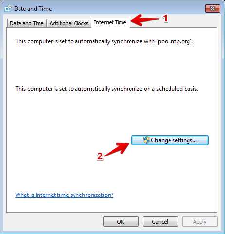
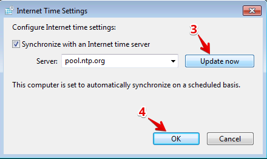

1. Introduction¶
In this lab session, you will be introduced to a few different ways to gather, visualize and analyze traffic information available on a BIG-IP platform. It is assumed that you are familiar with the basics of setting up a BIG-IP device for various ADC functions. The lab environment has already been setup with an HA pair of BIG-IP Virtual Editions (VEs) that have been pre-configured for a few web applications. Your task will be to configure the BIG-IPs to generate Analytics data so that you may visualize and analyze this data.
1.1. Lab Environment Setup¶
The following components have been setup with basic configurations for you:
- 2x F5 BIG-IP VEs running version 13.1.0.5, paired in an Active/Standby HA Cluster
- 1x Linux LAMP Server running Splunk and a few different web applications
- 1x Windows jumphost
1.2. Accessing the Lab Environment¶
To access the lab environment, you will require a web browser and Remote Desktop Protocol (RDP) client software. The web browser will be used to access the Lab Training Portal to retrieve the IP address for your Windows jump host that you will RDP into to access the entire lab environment.
Note
All work for this lab will be performed exclusively from the Windows jumphost. No installation or interaction with your local system is required.
Connect to the Training Portal (details provided by lab instructor)
Retrieve the IP address / hostname of the Windows jumpbox (Win7 Client)
Establish an RDP connection to your jumpbox and login with the following credentials:
- User:
external_user - Password:
F5Agility
Ignore any warnings about Windows activation
- User:
Ensure that the Windows jumpbox has the correct time. This is necessary in order for other operations to work correctly. To set the correct time, click on the Date/Time in the bottom right-hand corner of the RDP window, and then click on Change date and time settings

In the Date and Time window:
- Click on the Internet Time tab
- Click Change settings…
- Then click Update now.
- Finally, click OK, and OK one more time

